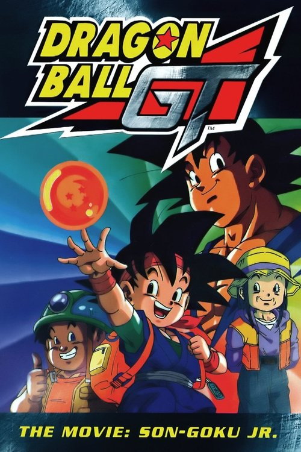

Dragon Ball GT: A Hero's Legacy (1997)
الوصف: Son Goku Jr. is the great-great-grandson of the legendary martial artist Son Goku. However, unlike his predecessor he's not a brave fighter. He's constantly picked on by school bullies, his grandmother Pan sees this and she's worried, but even though Goku Jr. is not a strong and powerful Saiyan, he has a kind heart, and Pan loves him. When Pan gets sick Goku Jr. realizes he must do something if he doesn't want to lose Pan. Then he will remember about the legends of the Dragon Balls. It was told they granted a wish to the bearer, Goku Jr. needs a magical wish more than ever.
الممثلون
- Masako Nozawa (Son Gokû Jr. / Son Gokû)
- Yuko Minaguchi (Pan (voice))
- Shin Aomori (Gettô (voice))
- Kazuyuki Sogabe (Rakkaru (voice))
- Miki Ito (Manba (voice))
- Ryuuzaburou Ootomo (Yô-maô (voice))
- Toru Furuya (Pakku (voice))
- Yasuhiko Kawazu (Driver (voice))
- Yoshiyuki Kono (Henchman A (voice))
المخرج: Osamu Kasai
المنتج: غير متوفر